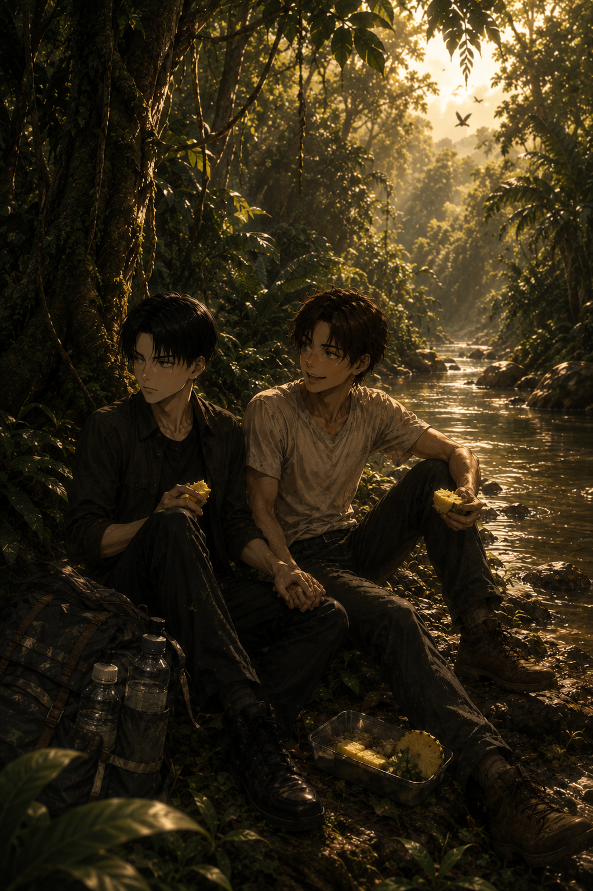

Amazonia
Levi — POV

The Amazon was louder than Levi expected.
Not city loud. Not chaotic. But alive — layered with insects, distant birds, leaves shifting, something moving that shouldn’t be moving.
Levi stood still for a moment, staring at the endless green.
“We’re going to get lost,” he said calmly.
“You’re annoying,” he replied. “We are not getting lost, I have a map.”
“That’s exactly what people say before getting lost.”
Eren, already grinning, adjusted the strap of his backpack — conspicuously light.
Levi shifted both water bottles in his own bag, the weight pulling on his shoulders.
“You said you’d carry one this time,” Levi muttered.
“I hate carrying water,” Eren replied instantly. “It ruins the vibe.”
“Dehydration will ruin it more.”
Eren flashed him a smile that meant you’ll carry it anyway.
Eren laughed. Loud. Bright. Echoing into the trees like he was daring the jungle to challenge him.
“If you keep talking like that,” he added, “I’m giving you to a tribe.”
Levi turned slowly.
“You would?”
“Yeah,” Eren nodded seriously. “They’ll keep you. You’ll complain too much and they’ll use you for rituals.”
“Lovely.”
Eren leaned closer, lowering his voice dramatically.
“Ayahuasca,” he whispered.
Levi blinked slowly.
“That’s not how that works.”
Eren straightened, suddenly very serious — which, coming from him, was already suspicious.
“Okay, listen,” he began. “It’s a ritual drink. Made from vines. Very spiritual. People take it to face their fears. To cleanse their souls.”
“You are not qualified to explain this.”
“I am absolutely qualified,” Eren insisted. “You drink it, you see visions, you cry a little, maybe throw up your bad energy, and then you come back reborn.”
Levi stared at him.
“You want me to hallucinate in the middle of the Amazon.”
“I think it would build character,” Eren replied, completely unbothered.
“I have character.”
“Right now, the only thing you have is anger against me,” Eren corrected, faking hurt.
Levi narrowed his eyes.
“And what would I see, exactly?”
“Probably that you secretly love me more than you say and admit it dramatically,” Eren said, thoughtful.
Levi stepped on his foot.
“I don’t need a vine tea for that.”
Eren still laughing, they started walking along the narrow path, humidity clinging to their skin.
Levi stayed close, pretending it was because of the terrain and not because something screeched overhead.
“What was that.”
“Probably a bird.”
“It sounded like it was screaming.”
“It probably was.”
Levi grabbed the back of Eren’s shirt.
“If I die here, I’m haunting you.”
Eren laughed again, turning around just enough to steal a quick kiss from him.
“Relax. I grew up here.”
Levi raised an eyebrow.
“You did not grow up in the Amazon.”
“Spiritually, I did.”
The deeper they went, the more Eren’s energy shifted.
He pointed at everything. Named birds. Talked about plants. Explained which fruits were safe, which ones weren’t, which ones looked safe but betrayed you.
“See that tree?” he said. “You don’t touch it.”
“Why.”
Eren pointed at a tree with glossy leaves and innocent-looking green fruit.
“Manchineel,” he announced proudly. “Looks cute. Smells sweet. Kills you.”
Levi narrowed his eyes.
“Just like you then. You’re lying.”
“I’m not,” Eren said, delighted. “The fruit looks like a little apple. If you bite it, your throat burns. Your skin blisters if you touch the sap. If it rains and you stand under it? Congratulations, you’re getting chemical-burned by tree water.”
Levi slowly lowered his hand.
“Why would nature do that.”
“So you can end up on the news, probably,” Eren replied lightly.
They reached a clearing near the river.
The water moved lazily, sunlight scattering across its surface.
Levi stared at it.
“Are there piranhas.”
“Probably.”
“You’re enjoying this too much.”
Eren dropped his bag, stretched his arms, and inhaled deeply.
“You need a benzedeira,” he said suddenly.
Levi blinked.
“A what.”
Eren turned toward him, already invested.
“A benzedeira,” he repeated properly. “It’s like… a healer. Usually an older woman. She prays over you, uses herbs, branches — whatever she needs. It’s a blessing ritual.”
“And this concerns me how.”
“Because you,” Eren said, pointing at him, “are full of bad jungle paranoia energy.”
Levi narrowed his eyes.
“Explain.”
Eren shifted, suddenly a little more sincere.
“Okay. So when I was a kid, my mom took me every month. Once a month. No skipping. Didn’t matter if I complained.”
Levi’s eyebrow lifted slightly.
“Every month.”
“Every month,” Eren confirmed. “I’d sit on this tiny plastic chair. She’d stand in front of me with these branches — sometimes rosemary, sometimes something else — and she’d start praying.”
“Actual prayers?”
“Yes. Real ones,” Eren said. “Very serious. Very focused. It’s about protection. Clearing negative energy. Making sure nothing follows you home.”
Levi listened, expression unreadable.
“And?”
Eren hesitated — then his mouth twitched.
“And I never understood a word.”
Levi waited.
“To me,” Eren continued, lowering his voice theatrically, “it just sounded like—
‘pspspspspspspsps.’”
There it was.
Levi’s composure broke — not at the ritual, not at the tradition — but at the perfect imitation.
A quiet laugh escaped him before he could stop it.
“She did not.”
“She absolutely did,” Eren insisted, already grinning. “I’d sit there trying to be respectful, and all I could think was, ‘Is she talking to spirits or calling a cat?’”
Levi turned away briefly, shoulders shaking once.
“You’re terrible.”
“No, listen,” Eren went on, warming up now. “She’d wave the branches around my head, tap my shoulders lightly, sometimes blow air like—”
He demonstrated softly:
“Pffff.”
“And then more ‘pspspsps.’”
Levi pressed his lips together.
“And your mother thought this was effective.”
“My mother was convinced it kept me from getting sick, cursed, possessed, or ‘too wild,’” Eren said, making quotation marks in the air. “Which clearly failed.”
Levi’s mouth twitched.
“So you survived.”
“Obviously. I’m spiritually fortified.”
He nudged Levi lightly with his shoulder.
“If you start panicking about jungle noises, I’ll just go ‘pspspsps’ and fix you.”
“You deserved it.”
“Rude.”
They sat by the river, shoulders brushing, eating their abacaxi.
The jungle hummed around them.
“You’re not scared, are you?” Eren asked quietly.
Levi hesitated.
“Of course not.”
A branch snapped somewhere deeper in the forest.
Levi instinctively grabbed Eren’s hand.
Eren squeezed it.
“Afraid of Mr.Jaguar?” he murmured. “You’d survive.”
“I wouldn’t.”
“You would. You’re scarier than half of this place.”
Levi scoffed, but he leaned closer.
The air was heavy. The world felt endless.
Eren watched him, smiling softly now.
“If we get lost,” he said, “I’ll stay with you.”
“You’d better.”
“And if a tribe takes you,” Eren added, “I’m coming too.”
Levi rolled his eyes.
“You're gonna talk their ears off.”
“Only if they make me go back to the old lady with branches.”
Levi laughed again.
The Amazon was wild.
Loud.
Impossible.
But with Eren laughing beside him,
it didn’t feel like something to survive.
It felt like something to explore.